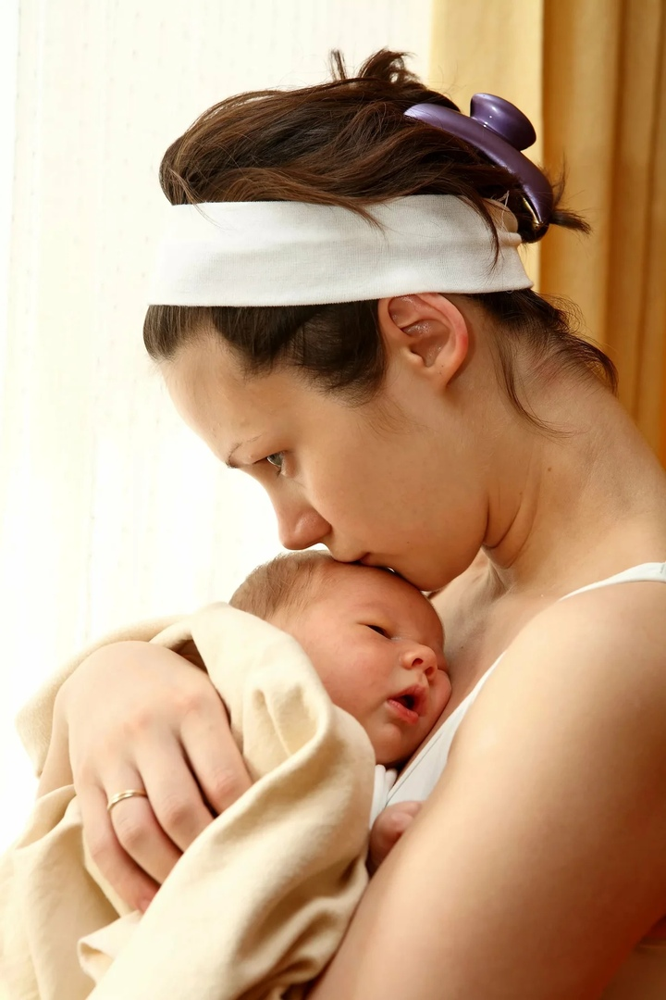

 C’est l’enfant qui crée sa mère, explique le célèbre psychanalyste Serge Lebovici.
Lui, il s’adapte à elle, et elle, elle s’adapte à lui.
Les animaux s’attachent instinctivement à leur mère pour se protéger des prédateurs, des dangers extérieurs.
Idem pour les êtres humains. L’attachement induit une atmosphère d’aide mutuelle.
Mais il est vrai qu’il peut aussi se construire sur le fond d’insécurité, de défiance.
Lorsque l’attachement est défiant, l’enfant semble ne faire aucune différence entre la présence et l’absence de la mère : à son retour, il ne manifeste aucune joie, comme si elle n’était jamais partie.
L’amour naît effectivement de l’attachement. Mais c’est un sentiment bien plus vaste et plus complexe qui s’appuie aussi sur des fantasmes.
Il y a toujours quelque chose chez la mère qui la pousse simultanément à aimer ou à haïr son enfant. En fait, cet amour se développe avant la naissance.
Question : Sentez-vous ce lien perticulier entre votre enfant et vous?
@carolyndugout: Je ressens un lien très spécial entre moi et mon fils, mais mon mari dit qu'il la ressent aussi.
@palomandersson: Oui, oui, c’est juste ! Ma fille et moi, nous avons ce lien, mais par moments, ce rapprochement m’inqiète un peu. Vraiment, ma fille m’est troooop proche: elle passe tout le temps avec moi et refuse même de se coucher seule, bien qu'elle ait 12 ans!